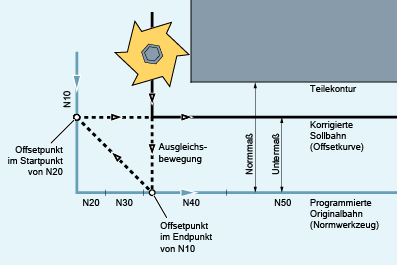

Das NC-Programm beschreibt die Mittelpunktsbahn eines Normwerkzeugs. Die Kontur für ein aktuell verwendetes Werkzeug ergibt ein Untermaß, welches im folgenden Bild zur Verdeutlichung der geometrischen Verhältnisse unrealistisch groß dargestellt ist.
Außerdem soll für das Beispiel gelten, dass die Steuerung nur drei Sätze überblickt:
MD20240 $MC_CUTCOM_MAXNUM_CHECK_BLOCKS = 3
Da ein Schnittpunkt nur zwischen den Offsetkurven der beiden Sätze N10 und N40 existiert, müssten die beiden Sätze N20 und N30 ausgelassen werden. Im Beispiel ist der Steuerung der Satz N40 noch nicht bekannt, wenn N10 abschließend bearbeitet werden muss. Damit kann nur ein einzelner Satz ausgelassen werden.
Bei aktiven CDOF2 wird die im Bild dargestellte Ausgleichsbewegung ausgeführt und nicht angehalten. In dieser Situation würde ein aktives CDOF oder CDON zu einem Alarm führen.